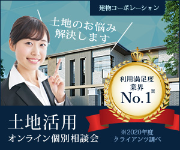

WorksBanner
プログラミングスクールの生徒募集
制作時間:デザイン5時間
- 【依頼内容】
-
- 20~30代の転職を考えている若者がターゲット
- 手軽に体験できるよう明るくポップな印象に
- 手書き文字を使ってほしい！
- 配色はパステルカラーで柔らかい雰囲気で
- 【提案したこと】
-
文字サイズを5段階に分けてメリハリをつけた。
パターン１では背景の写真をぼかすことで、柔らかい雰囲気を表現した。
パターン２では、ポップな配色を使用して、柔らかい雰囲気を表現した。

土地活用オンライン個別相談会
制作時間:デザイン5時間
- 【依頼内容】
-
- サービスの利用満足度が高い部分をアピールしたい
- 信頼が伝わるように青系で文字は明朝体が良い
- オンラインで気軽に相談できる雰囲気
- 【提案したこと】
-
パターン1では幾何学的な背景を使用することで、土地や住宅を連想できるようにした。
パターン2では利用満足度を大きく表示したり、青一色で視認性を上げたりする工夫をした。

リノベーションのショールーム見学会
制作時間:デザイン4時間
- 【依頼内容】
-
- 木や自然が好きな人に好まれるナチュラルな雰囲気で
- 「自然と暮らす」は縦書きでの記載希望
- アースカラーにしてほしい。でも暗くはしたくない
- 【提案したこと】
-
パターン1はお洒落な寝室をシンプルな図形だけで表現しました。
パターン2はナチュラルティストを意識して木造のリビングを曲線や丸を多めに使って表現しました。
依頼内容とは別にロゴもデザインしました。詳細はロゴのページで。
クレンジングオイルの新商品PR
制作時間:1デザイン4時間
- 【依頼内容】
-
- 白をベースにナチュラルで女性が好む雰囲気
- 5種類のオイルを図解で配置して欲しい
- 女性の顔よりも商品画像を目立たせて欲しい
- 【提案したこと】
-
2作品とも洗浄力をアピールするために、水面や水しぶきを使ったデザインにしました。
その中の成分として水滴を使って5種類のオイルを表現しました。
パターン1はオイルカラーに近い配色をし、オイリーな感じを出しました。
パターン2は反対色の水色を使い、洗い立ての爽やかさを表現しました。
専門学校のオープンキャンパス案内
制作時間:デザイン6時間
- 【依頼内容】
-
- 10代が好むポップな雰囲気をアメコミ風に
- 配色はカラフルで鮮やかな色に
- 事前予約が必要であることを知らせたい
- 【提案したこと】
-
アメコミ風にというご要望に対し、漫画のコマ割りを背景に使いました。
それぞれのコマから各要素をはみ出すように配置することで動きのあるデザインに仕上げました。
この課題では１パターンしか作成できず残念でした。また、人物写真は日本人ではなかった点や、
左寄りになってしまった点も改善したいところだと思いました。

観光バスのツアー参加募集
制作時間:デザイン3時間
- 【依頼内容】
-
- 紅葉の魅力が伝わるように秋を演出して欲しい
- 京都の街やお寺などの写真を使って欲しい
- 和の印象が伝わるような歴史的な雰囲気
- 【提案したこと】
-
紅葉の魅力が伝わる写真を選んだ結果、室内から覗く庭園という構図のものとなりました。
そこに和柄を配置し、文字を縦書きにすることで、歴史的な雰囲気を出しました。
しかし、京都の街やお寺というご要望に対し、この写真は分かりにくいものとなり残念に思いました。
また、バス会社の社名を上手く配置できませんでした。